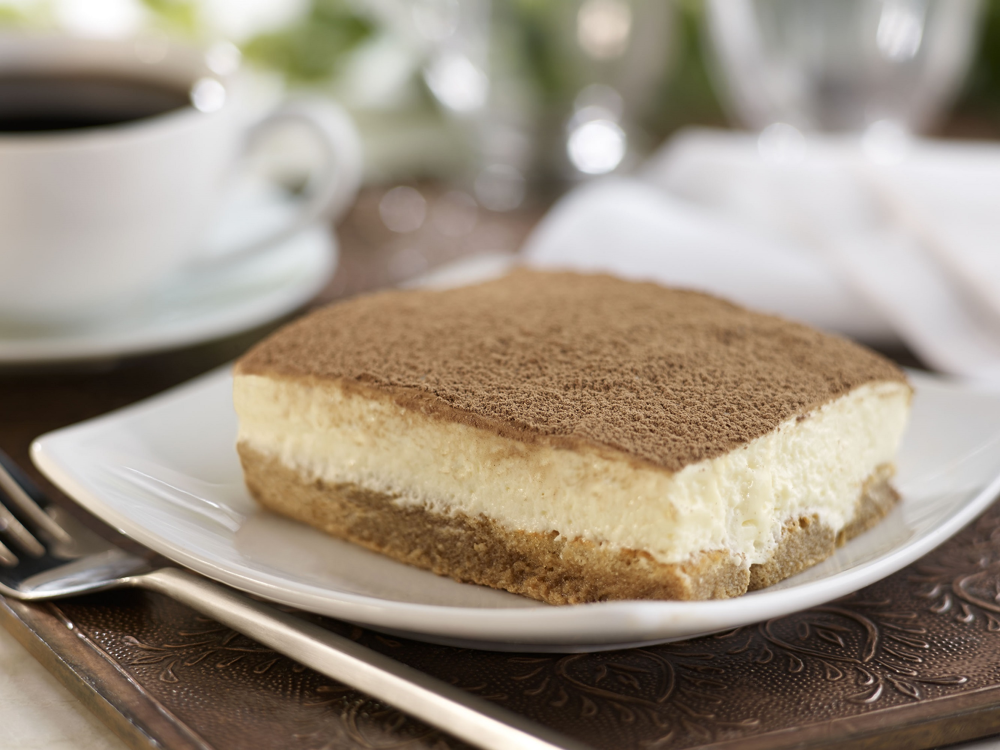

Tiramisu Dessert

A layer of espresso-dipped ladyfingers is topped with a creamy layer of mascarpone flavored with espresso, cognac, with beaten egg whites. Dusted with cocoa powder, this is a classic elegant dessert.
Ingredients
- 3 large eggs, separated
- 1 cup of brewed espresso or strong coffee, cooled, divided
- ½ cup of sugar
- 2 tablespoons of cognac or brandy
- 8 ounces of Mascarpone cheese
- 2 tablespoons of unsweetened cocoa powder
- 10 ladyfingers
Steps
- Combine 3 egg yolks, 1 Tbsp. espresso, sugar and cognac into large bowl. Beat 2-3 minutes. Add BelGioioso Mascarpone and beat 3 to 5 minutes until smooth.
- In another bowl, combine 3 egg whites and a pinch of sugar. Beat until stiff peaks form. Gently fold into Mascarpone mixture. (*If using egg substitute, skip step 2 and beat until fluffy.)
- Quickly dip each ladyfinger into remaining espresso and layer on bottom of small serving dish. Spread Mascarpone mixture and sprinkle with cocoa. Refrigerate at least 1 hour before serving.
Go Back!